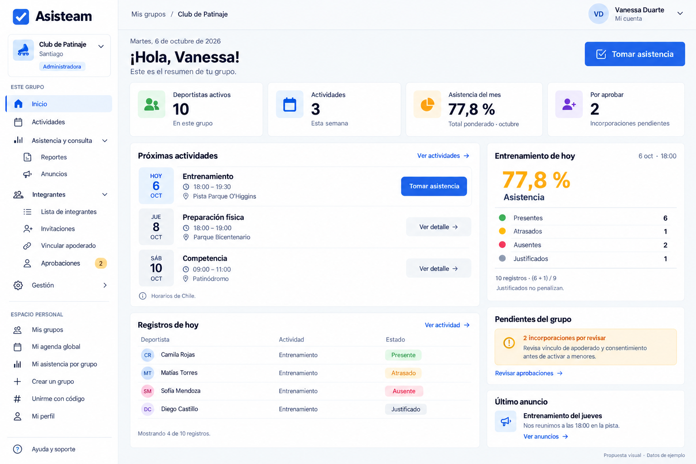
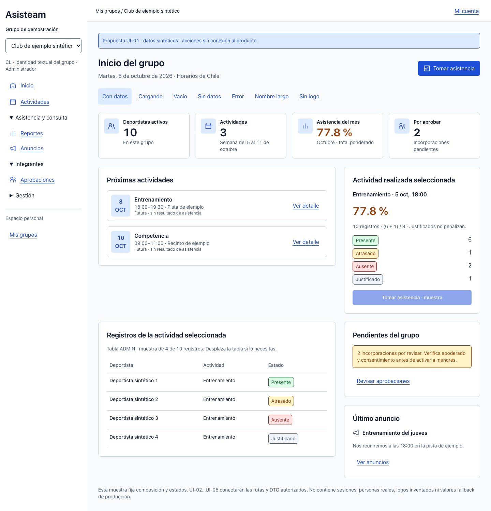

[Seguro] Referencia generada y propuesta estática con datos sintéticos. La propuesta demuestra el contrato; no acredita el dashboard conectado ni modifica permisos.
Referencia original · 1536 px
Imagen inmutable del 06-10-2026.

Propuesta · 1440 px
Componentes reales y tokens canónicos de Asisteam.

1 · Superficies y acción. Gradientes, brillos y sombras decorativas se sustituyen por Card, bordes y primary planos; se conserva jerarquía de bloques.
2 · Contraste y métrica. Porcentaje ámbar oscuro warning sobre surface, ≥4.5:1; icono decorativo, sin gráfico P1. 77.8 % proviene del fixture canónico y «Sin datos» del helper real.
3 · Tiempo y selección. La imagen mezcla actividades futuras con registros de hoy. Próximas actividades no muestran resultado; el panel/tabla identifican entrenamiento realizado del 5 de octubre.
4 · Identidad. Marca textual e iniciales/nombre real cuando falte logo. La muestra no reproduce personas, avatars ni logo generado como recursos de producción.
5 · Móvil. Una columna: actividad/acción, pendientes, consulta, registros y anuncio. Tabla desplazable localmente y controles ≥44 px; grupos/nombres largos se ajustan.
6 · Alcance. Estado y período visibles, tabla etiquetada ADMIN; los enlaces de la muestra son locales. UI-02…UI-05 conectarán shell/DTO/dashboard/roles con rutas existentes.